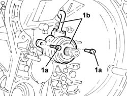

1820b38 HYDRAULIC CLUTCH ACTUATOR R R AND BLEED AIR WITH GEARBOX REMOVED
- Path
- Procedures > 18 CLUTCH UNIT > 1820 CLUTCH RELEASE CONTROLS > 1820B HYDRAULIC CLUTCH SYSTEM > 1820b38 HYDRAULIC CLUTCH ACTUATOR R R AND BLEED AIR WITH GEARBOX REMOVED
- Kind
- repair procedure (removal / refitting; the operation number is the code)
- Applies to
- engines: 1.8 T.SPARK; all production periods
- Interactive page
- https://sloeber94.github.io/elrnDB-aGt/en/#/125001231
Applies to: engines: 1.8 T.SPARK; all production periods
 Removing
Removing
 Refitting
Refitting